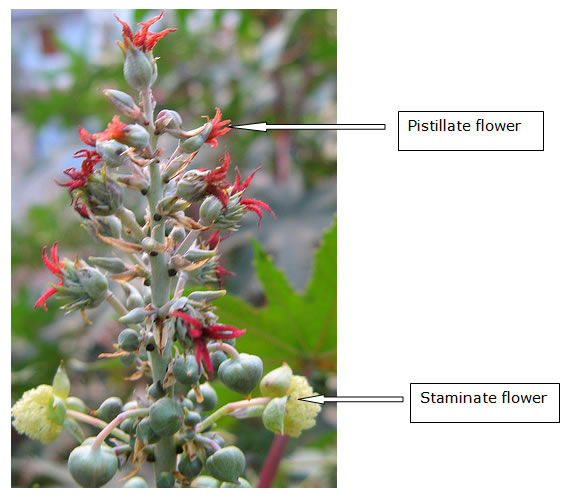
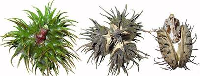
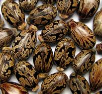

GPBR 112 :: Lecture 16 :: SEED PRODUCTION IN VARIETIES AND HYBRIDS OF CASTOR

Castor and its speciality
- Castor is a cross pollinated crop, protogynous and wind pollinated. Inflorescences are borne terminally on the main and lateral branches.
- The main stem ends in raceme, which is the first or primary raceme. After the first raceme appears, 2 or 3 branches arise at the nodes immediately below it.
- Each of these branches terminates in racemes after 4 or more nodes have formed which are known as secondary racemes.
- Branches arise from the nodes just beneath secondary racemes, ultimately terminating in tertiary racemes. This sequence of development (indeterminate growth habit) continues.
- The racemes of castor are monoecious with the pistillate flowers on the upper 30-50% and staminate flowers on the lower part of the inflorescence.
- The proportion of pistillate and staminate flowers among the racemes varies a great deal both within and among genotypes. It is influenced by the environment of the plant, genotypes and nutrition.
- Female tendency is the highest in winter, while male tendency predominates in summer and rainy seasons.
- Also, the femaleness in young plants with high levels of nutrition is stronger than in old plants with low levels of nutrition.
Castor raceme

Pistillate mechanism
In addition to monoecism a sub form of dioecism exists in castor, which has led to the identification of 3 different pistillate mechanisms.
- N type or conventional mechanism
- It is governed by a recessive sex switching gene. This can be maintained by sibmating. The progeny from seed produced on pistillate plants segregates in 1: 1 ratio of pistillate and monoecious plants. In the production of F1 hybrid seed using the N pistillate line, the producer is required to rogue out normal monoecious plants before anthesis to obtain 100% production of pistillate plants in the female rows. This has proved difficult to do for 3 reasons.
- Uneven emergence
- Variation in time of flowering and
- Higher percentage of monoecious plants than expected 50 percent.
- S type or non conventional mechanism
It is derived from reversals, which start out as female and then revert to normal monoecism any time after the first raceme. Use of this pistillate line is beset with the problems of lack of stability of the expression of pistillate character as large number of revertants as well as monoecious plants was observed in the population. Eg. VP 1. This problem was successfully overcome with the exploitation of the NES system.
3. NES system
This line is normally pistillate under moderate temperature but produces interspersed staminate flowers under high temperature. In crossing fields (hybrid seed production plot) usually one or two roguing of the female line are sufficient to ensure that all flowering plants are pistillate to remove off types that appear.
E.g. The original population of VP 1 was thoroughly screened under high temperature to eliminate the monoecious plants as well as early revertants.
The seed setting in the selected totally pistillated lines is facilitated by the production of interspersed male flowers under the influence of environment sensitive genes.
India is the largest producer of castor in the world. In India, Gujarat is the leading state followed by Andhra Pradesh.
Varieties
SA 1, SA 2, TMV 4, 5, 6, CO 1, Aruna, Bhagya and Sowbaghya
Speciality with Hybrids in castor
- The development of N type pistillate line, N 145-4 has led to the exploitation of hybrid vigour in USA in 1950.
- A 100% pistillate line TSP 10 R (Texas S- pistillate 10) was released in 1962 in USA.
- Another stable pistillate line (NES 1) based on environmentally sensitive staminate flower character in combination with recessive sex switching gene released at Davis, California in 1964, is now used.
- In India, Gujarat first started hybrid seed production in mid sixties.
- First hybrid in India was released in 1968 in Gujarat as GCH3 (Gujarat castor hybrid) using TSP 10 R x JI 15.
- Indigenous pistillate line VP 1 was developed at Vijapur and using this GAUCH was released in 1973. But it is susceptible to wilt and root rot diseases.
- Hence another hybrid GCH 2 was released in 1985.
- Another hybrid GCH 4 was released in 1986 and is in cultivation.
Hybrids |
Female |
Male |
GCH 3 |
TSP 10 R |
JI 15 |
GAUCH 1 |
VP 1 |
V 19 |
GCH 2 |
VP 1 |
JI 35 |
GCH 4 |
VP 1 |
48-1 |
TMVCH 1 |
LRES 17 |
TMV 5 |
Land requirement
Well drained fertile soil should be selected. The crop cannot tolerate alkalinity and salinity. It performs well with medium to deep sandy loam and heavy loam soils are highly suited for seed production.
Isolation distance
Foundation seed Certified seed
Varieties and Hybrids 600 m 300 m
Season
Rabi / Winter - Hybrid seed production. Summer and kharif provide ideal male promoting environment for undertaking seed production of the variety, male and female parents of hybrids. Kharif and summer encourages good expression of less productive plant which could be easily eliminated through timely roguing.
Female parents when raised in male promoting environment produce environmentally sensitive staminate flowers, which are very essential for self-production of the female parents.
Seed and sowing
Seed rate : 10 kg / ha (varieties)
2 kg / ha male and 5 kg/ ha female for hybrids.
Spacing
Varieties : 90 x 20 to 90 x 60 cm
Hybrids : 90 x 40 to 90 x 60 cm
Planting ratio
3:1 or 4 - 6:1
Fertilizer : Basal 40:60: 40 NPK / ha
Top: 1st 20 kg N/ha (40-50 DAS) , 20 kg N/ha. (After 1st picking)
Bloom: Presence of white waxy coating which protects from chilling and jassid attack.
4 types of bloom:
- No bloom
- Single bloom - Bloom only on stem
- Double bloom- On stem, petioles, and lower sides of leaves
- Triple bloom - On all parts.
Stages of inspection
- 10 days prior to flowering -Stem colour, inter-node length.
- During flowering - No. of nodes upto primary raceme
- Before 1st picking (Spike and capsule character, reversion to monoecious in second order raceme)
- After 1st picking - Reversion to monoecious or flower initiation in third order raceme.
Irrigation
Critical stages are primordial initiation and flowering stage in differential segmental order branches. Moisture stress in sensitive crop growth stages may lead to production of more male flowers in monoecious varieties.
Harvesting
Castor produces 4 or 5 sequential order spikes, which can be harvested in 3-4 pickings starting from 90-120 days at 25-30 days interval.

Premature harvesting leads to reduced seed weight, oil content and germination. If shattering is not a problem in a variety, harvesting can be delayed until all capsules are fully dried.
Grading
The seeds are size graded using round perforated metal sieve of 8/64".

Field standards
Foundation seeds Certified seeds
Off types (Varieties) 0.1 0.2%
Off types (Hybrids) 0.5 1.0%
Seed storage
Seed treatment with Thiram @ 2 g / kg
Storability in Pervious container - 1 year
Storability in Moisture vapour proof container - 2
Seed standards
The graded seed should possess the following characters for certification and sale as certified/ truthfully labelled seeds.
Parameter Foundation seed Certified seed
Physical purity (min) % 98 98
Inert matter (max) % 2 2
Other crop seed &Weed Seed (max) - -
Other distinguishable variety seeds 5 / kg 10/kg
Germination (min)% 70 70
Moisture content (max)%
(a) Open storage 8 8
(b) Moisture vapour proof storage 5 5
| Download this lecture as PDF here |